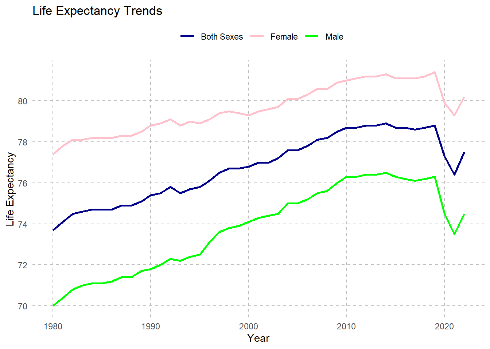
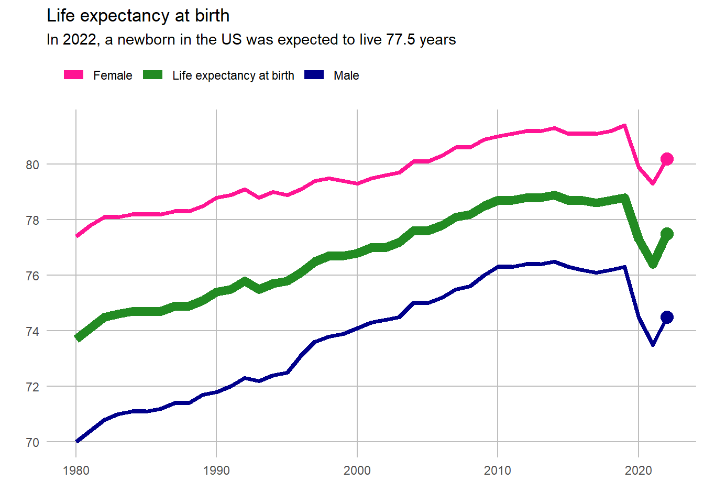

── Conflicts ────────────────────────────────────────── tidyverse_conflicts() ──
✖ dplyr::filter() masks stats::filter()
✖ dplyr::lag() masks stats::lag()
ℹ Use the conflicted package (<http://conflicted.r-lib.org/>) to force all conflicts to become errors
Because the data for the graph is relatively clean and simple, I directly feed the data to ChatGPT. Then I describe the structure of the dataset to ChatGPT and specify what the graph should look like. I have copied the prompt below.
” This dataset has 5 variables. Both_sexes, male, and female are the variables that contain life expectancy for both sexes, males, and females, respectively. Use this dataset to create a line plot using R codes. The line plot should show the trends of life expectancy for both sexes, males and females separately. year should be on the x axis, life expectancy on the y axis. On the x axis, there should be 5 ticks (1980, 1990, 2000, 2010, 2020). There should be 6 ticks on the y axis (70,72,74,76,78,80). There should be grids for the ticks. The line for female should be pink, the line for male should be dark blue, the line for both sexes should be green. ”
# The codes below are generated by ChatGPT# Create the line plotggplot(life_exp, aes(x = year)) +geom_line(aes(y = both_sexes, color ="Both Sexes"), size =1) +geom_line(aes(y = male, color ="Male"), size =1) +geom_line(aes(y = female, color ="Female"), size =1) +scale_x_continuous(breaks =c(1980, 1990, 2000, 2010, 2020), minor_breaks =NULL) +scale_y_continuous(breaks =c(70, 72, 74, 76, 78, 80), minor_breaks =NULL) +labs(title ="Life Expectancy Trends",x ="Year",y ="Life Expectancy") +theme_minimal() +theme(panel.grid.major =element_line(colour ="gray", linetype ="dashed"),panel.grid.minor =element_blank(),legend.position ="top",legend.title =element_blank()) +scale_color_manual(values =c("darkblue", "pink", "green"))
Warning: Using `size` aesthetic for lines was deprecated in ggplot2 3.4.0.
ℹ Please use `linewidth` instead.

ChatGPT did a really good job for this very first prompt. But the colors didn’t look right. I had to manually change the line colors, the title, thickness of the line, legend labels, grid types, and remove x/y-axis title so that the graph looks more like the original one.
# Manually tuned graphggplot(life_exp, aes(x = year)) +geom_line(aes(y = both_sexes, color ="Life expectancy at birth"), size =3) +geom_line(aes(y = male, color ="Male"), size =1.5) +geom_line(aes(y = female, color ="Female"), size =1.5) +geom_point(data = life_exp %>%filter(year ==max(life_exp$year)),aes(y = both_sexes), color ="forestgreen", size =4, shape =19) +geom_point(data = life_exp %>%filter(year ==max(life_exp$year)),aes(y = male), color ="darkblue", size =4, shape =19) +geom_point(data = life_exp %>%filter(year ==max(life_exp$year)),aes(y = female), color ="deeppink", size =4, shape =19) +scale_x_continuous(breaks =c(1980, 1990, 2000, 2010, 2020), minor_breaks =NULL) +scale_y_continuous(breaks =c(70, 72, 74, 76, 78, 80), minor_breaks =NULL) +labs(title ="Life expectancy at birth",subtitle ="In 2022, a newborn in the US was expected to live 77.5 years",x ="",y ="") +theme_minimal() +theme(panel.grid.major =element_line(colour ="gray", linetype =1),panel.grid.minor =element_blank(),legend.position='top', legend.justification='left',legend.direction='horizontal',legend.title =element_blank()) +scale_color_manual(values =c("deeppink","forestgreen","darkblue" ))

Now the reproduced graph looks very much like the original one. For comparison, the original graph is attached below.
Create a publication quality table
The dataset itself is the content that I want to present, so there is no need to make a summary of the numbers. I asked ChatGPT to create a table of publication quality using the gt() package. After manually tuning the main title and column titles, the table looked satisfying.
# Create a gt tabletable1 <- life_exp %>%gt() %>%cols_label(year="Year",both_sexes="Both Sexes",male="Male",female="Female" ) %>%tab_spanner(label ="Life expectancy (years)",columns =c(both_sexes, male, female), ) %>%tab_header(title ="Life expectancy at birth in the U.S. by sex, 1980-2022", ) # Print the tabletable1
Life expectancy at birth in the U.S. by sex, 1980-2022